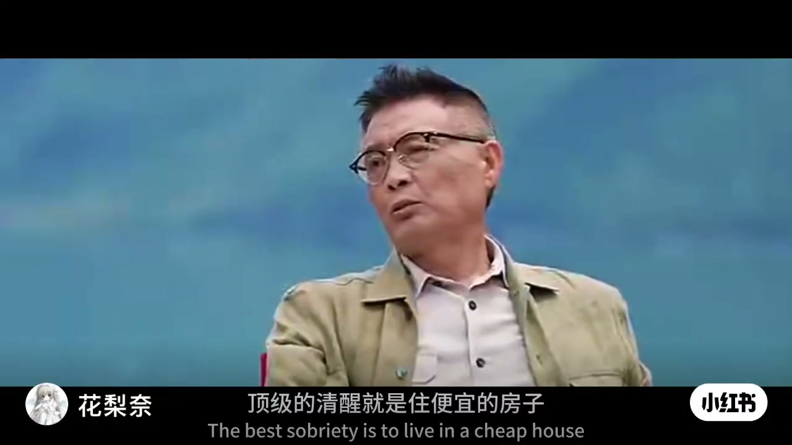
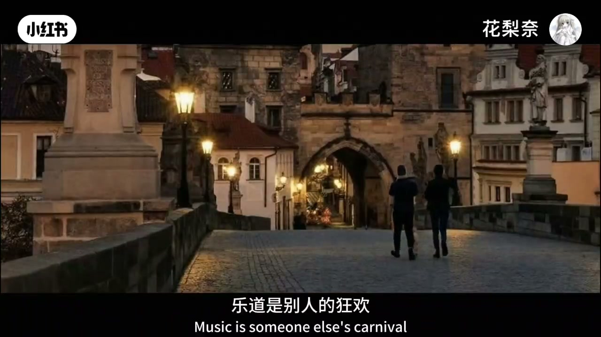
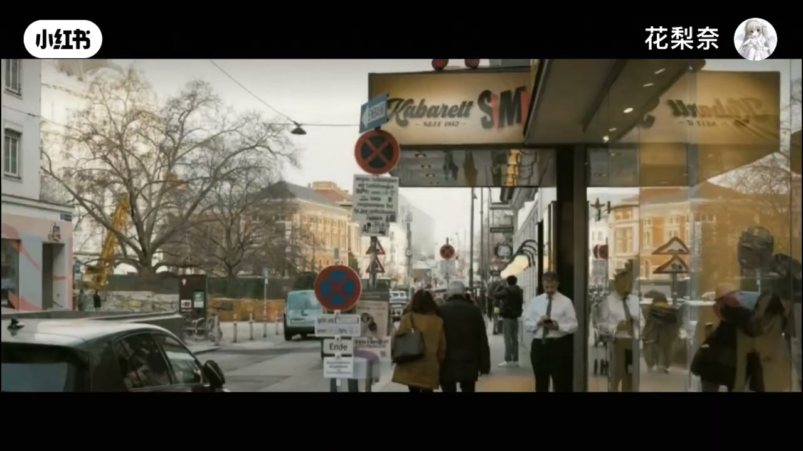

内容要点
一条四十秒的情绪短片，没有情节铺陈，只把「顶级清醒」收成一张生活清单：住便宜的房子、开便宜的车、衣着朴素、多睡少吃、好好玩。活到某个阶段，庄子那句「独与天地精神往来」会忽然清楚——热闹是别人的狂欢，孤独是自己的自由。结尾把自由推到极致：不是拥有什么，而是做什么都不必解释。
知识结构
住便宜房、开便宜车、衣着朴素、多睡少吃、好好玩；想通庄子「独与天地精神往来」，热闹归别人，孤独归自己。
一个人觉得舒服自在，说明内心强大；高能量者享受孤独，最高境界是无需理解；自由到最后是做什么都不必解释。
清醒不是苦行表演，而是把生活成本与社交热闹降下来，把能量留给能独自往来的精神空间；真正的自由，是行动不必再向谁解释。
00:00-00:21清醒的形状：便宜的生活与庄子那句话
口播第一句即命题：「顶级的清醒就是住便宜的房子，开便宜的车，衣着朴素，多睡少吃，好好玩。」没有展开论据，像把一套反炫富的生活坐标直接钉在观众眼前。
「能活到了某个阶段，就会想清楚庄子所说的那句话——独与天地精神往来。」紧接着把热闹与孤独对折：「热闹是别人的狂欢，而孤独是自己的自由。」


00:21-00:42享受孤独，直到不必解释
后半段转向内在检验：倘若一个人的时候觉得很舒服、很自在，说明你是内心强大的人——「因为只有能量高的人才会享受孤独。」
孤独的最高境界被说成「无需理解」；自由到最后，「不是拥有什么，而是你做什么都不必解释。」短片在这句上收束，把物质清单收进精神主权。

完整转录（18段）
以下文本由 Whisper medium 模型自动转录，可能存在少量识别误差，已尽可能修正。
顶级的清醒就是住便宜的房子
开便宜的车
衣着朴素
多睡少吃
好好玩
能活到了某个阶段
就会想清楚庄子所说的那句话
独与天地精神往来
热闹是别人的狂欢
而孤独是自己的自由
倘若你一个人的时候觉得很舒服
很自在
那说明你是一个内心强大的人
因为只有能量高的人才会享受孤独
孤独的最高境界就是无需理解
自由到最后
不是拥有什么
而是你做什么都不必解释